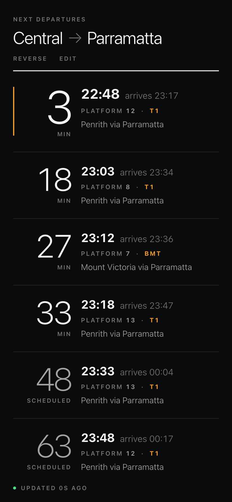
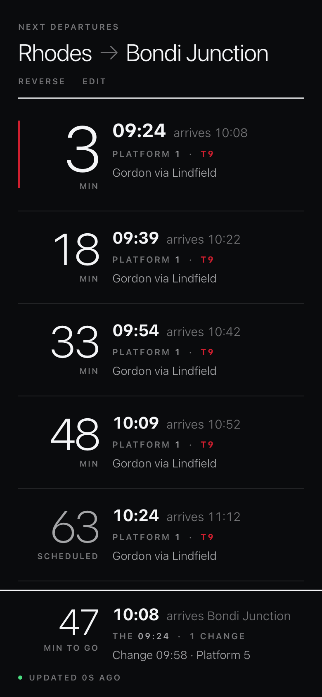

Each answers all five complaints in one composition — figure/platform disambiguation, loud line colour, thumb navigation, a past timeline in two honest registers, and the prediction highlight. Divergence is in HOW. Full reasoning, measurements and the recommendation are in OPTIONS.md beside this file.
Everything is real data from tools/fixtures/. The only synthetic
inputs are two named deltas (a 6-minute delay, one cancellation) because both
fixtures were captured on days with no disruption.


Keeps the row grammar. Welds the unit to the numeral, lifts the platform into a labelled block of its own at the right edge, and paints a colour rail down every row, split where the journey changes trains.
The headline figure becomes the departure TIME. Past and future become the same row. The hairline between rows becomes the line's colour at 3px. The masthead moves to the bottom edge.
One continuous coloured line down the page with NOW as a place on it. The platform moves onto the rail as a filled roundel; the minutes figure takes the far right column.
Re-litigates the row grammar. One answer at the top — MINUTES and PLATFORM side by side, same size, both named — then a one-line ledger. Nothing else on the board carries a big number at all.
Top row: the hero at 390×844. Middle: scrolled into the recent past. Bottom: scrolled deep, where the realtime record has aged out of half the page.